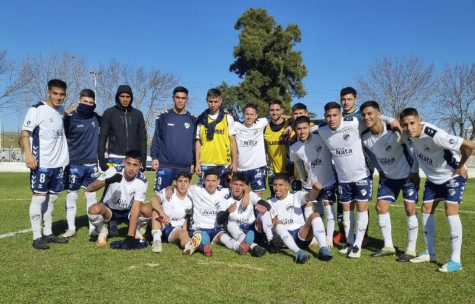

Categorias
Desde Cuarta división hasta noveta división
Tabla General.
- 1° - Atletico Rafaela 169 puntos - 72 PJ
- 2° - QuilmesAClub 160 puntos - 72 PJ
- 3° - Ferro 145 puntos - 72 PJ
- 4° - Temperley 144 puntos - 69 PJ
- 5° - Chacarita 131 puntos - 72 PJ
- 6° - Defenzores de Belgrano 110 puntos - 72 PJ
- 7° - Nueva Chicago 109 puntos - 72 PJ
- 8° - All Boys 106 puntos - 71 PJ
- 9° - Estudiantes 97 puntos - 67 PJ
- 10° - Almagro 86 puntos - 72 PJ
Ultimos Jugadores en subir al platntel profesional
- Axel Batista - Volante por derecha
- Mario Sanabria - Extremo ofensivo
- Jesus Camaño - Mediocampista central
- Elias Brisuela - Mediocampista Cemtral
- Kevin Lopez - Mediocappanpista izquierdo
- Federico Tevez - Defensor central
- Nahuel Insaurralde - Arquero
- Juan Ignacio Morales - Arquero
